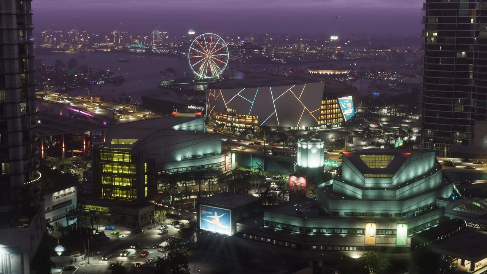

Vue de Vice City : Rockridge n'a pas encore de visuel officiel dédié. © Rockstar Games / Take-Two Interactive — image officielle de GTA VI (capture officielle), via GTA Wiki.
Rockridge
Fiabilité Rockridge n'a été vu que dans les fuites de septembre 2022 (non officiel). Ces informations ne sont pas confirmées par Rockstar.
Rockridge est un quartier de Vice City. Les fuites de septembre 2022 le montrent à plusieurs reprises : une enseigne du Rockridge Community Resource Center confirme son nom. Les données de minimap indiquent aussi qu'il borde une rivière sans nom qui traverse Vice City.
Lieux d'intérêt (vus dans les fuites)
- Le centre commercial Cipher Mall
- Le stade de football américain Fleeca Field (domicile des Vice City Mambas)
- Lou's
- Le terminal Navaro Shipping
- Le Rockridge Community Resource Center
- Venture Apartments
- Warren Thacker Manor
Inspiration réelle
Le quartier est basé sur Riverside, à Miami. Son nom rappelle le slogan des frères Tatum, premiers promoteurs de Riverside : « The Beautiful Ridge », en raison du terrain vert et surélevé proche de la rivière.